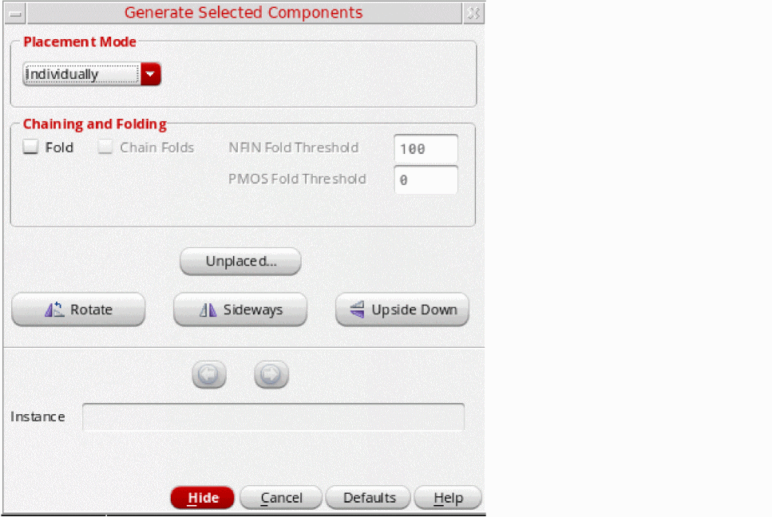
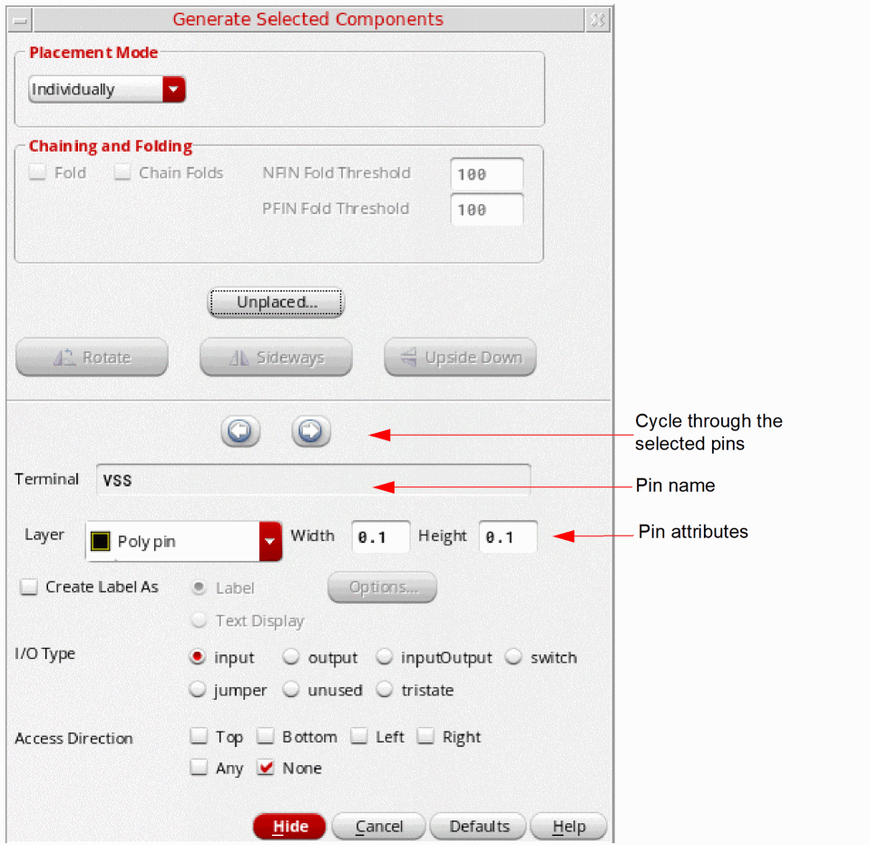

Generating Individual Pins
To generate schematic pins one at a time in the layout view,
-
From the layout window menu bar, choose Connectivity – Generate – Selected From Source.
The Generate Selected Components form is displayed (pressF3if it is not displayed).
 - In the Placement Mode group box, choose Individually from the drop-down list to generate the pins one at a time.
-
In the schematic window, select the pins you want to generate using one of the following methods:
-
Click the components in the schematic canvas or Navigator assistant. To select multiple components, keep the
Shiftkey pressed during selection or area-select the components. To deselect a component, click the component while theCtrlkey is pressed. - Click Unplaced to view the Instance/Pin List Form. In the form, select the components to place and click Apply to select them in the schematic window. See Listing Unplaced Components after Layout Generation.
The selected pins remain highlighted until they are either deselected or generated in the layout view. You cannot select a pin in the schematic if an instance with the same name exists already in the layout.
The form expands to show the name of the first pin in the list (the current pin), along with the attributes set on that pin.
The current pin is highlighted in the schematic in the color assigned to thePoly pinlayer. Selected pins that have not yet been generated are highlighted in the color assigned to thePoly pinlayer. -
Click the components in the schematic canvas or Navigator assistant. To select multiple components, keep the
-
Move your pointer into the layout canvas.
The outline of the current pin follows the pointer in the layout window. -
Set the options and pin attributes you want.
- Change the pin attributes if required. Any changes you make are applied to the current pin and also become the defaults for all subsequent pins in the selected set. For more information, see Generate Selected Components - Pin Options Form.
The Chaining and Folding and Alignment options and the orientation buttons are disabled because you are placing pins. -
Click in the layout canvas to place the current pin at the required location.
The pin has the connectivity indicated in the schematic and is automatically snapped to the placement grid.
If you selected more than one pin, the next pin in the list becomes the current pin in the form. You can use the Previous and Next arrow buttons at the top of the pin attributes section to quickly move back or forward through the set of selected pins. - Repeat steps 4 through 6 to generate the next pin in the selected set.
Related Topics
Generate Selected Components - Pin Options Form
Return to top